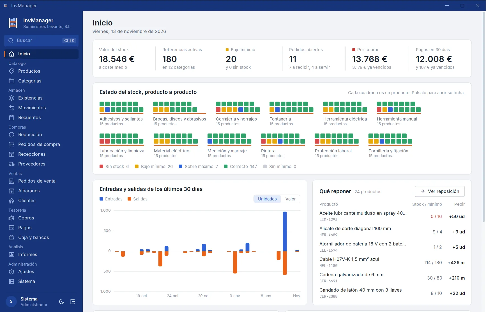
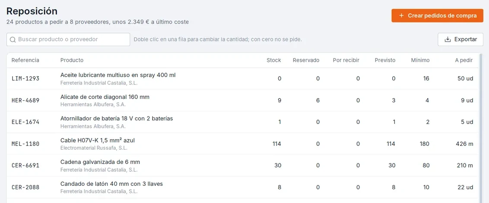
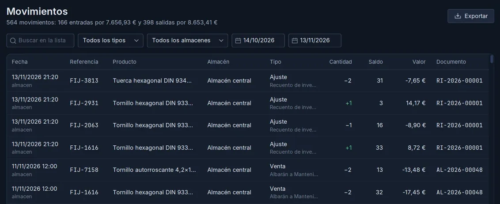
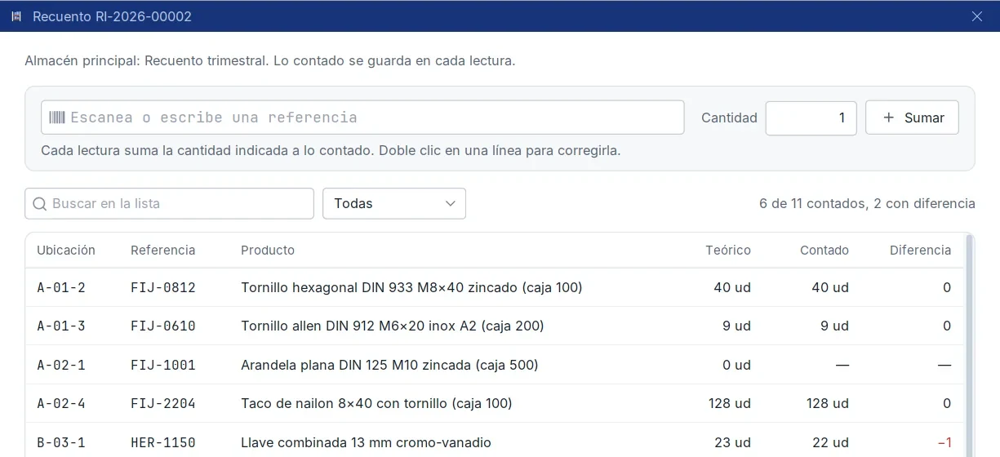
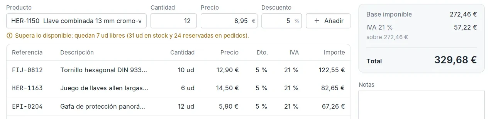
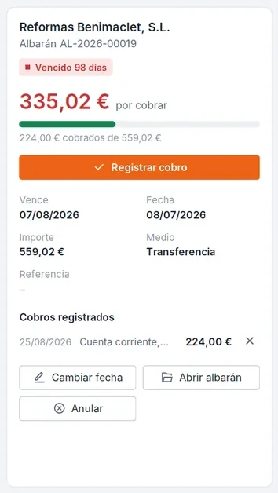
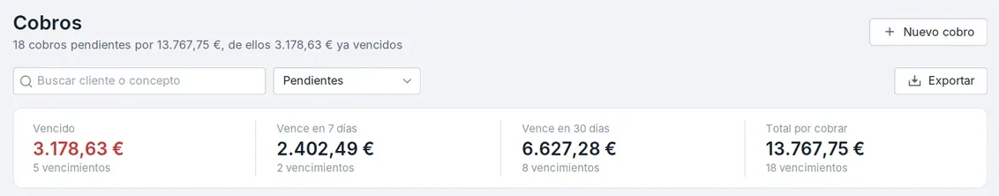
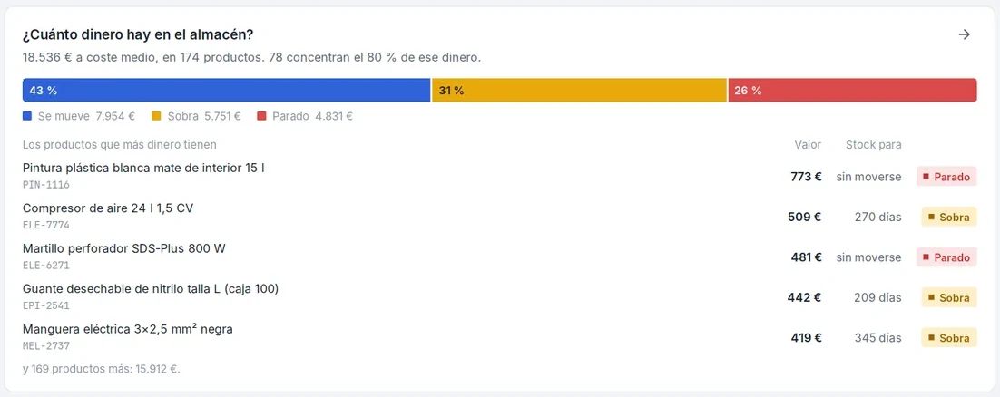
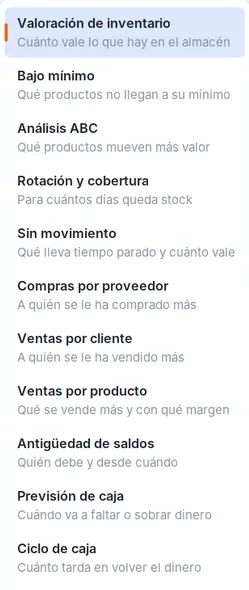
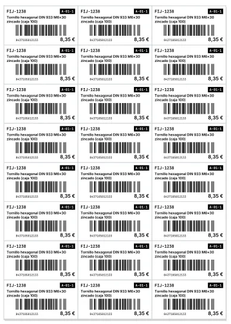

Qué hay, qué falta, qué pedir y cuándo se cobra.
Inventario, compras, ventas y tesorería para pequeñas empresas de distribución y comercio, en un programa de escritorio para Windows. Gratis.
Windows 10 y 11 de 64 bits. Lleva su propio Java: se descomprime y se abre.


Lo primero que se ve al abrir
Valor del stock, productos bajo mínimo y sin stock, pedidos abiertos de compra y de venta, lo que hay por cobrar y lo que toca pagar en 30 días, y el estado de cada producto de un vistazo. Cada cifra lleva a la pantalla donde se trabaja con ella.
Todo el ciclo, de la reposición a la caja
Cada paso alimenta el siguiente, y el stock que queda vuelve a decir qué hay que pedir.
En el mapa: la reposición crea los pedidos de compra; la recepción mete la mercancía en el stock y deja un pago previsto; el pedido de venta pasa a albarán, que saca la mercancía del stock y deja un cobro previsto; el recuento ajusta el stock; cobros y pagos previstos llegan a caja y bancos, y el stock previsto vuelve a la reposición.
La reposición dice qué pedir
Calcula qué productos se van a quedar por debajo de su mínimo, contando lo vendido sin servir y lo comprado sin recibir, y propone cuánto pedir de cada uno para volver a su máximo. Se corrige lo que haga falta y un clic crea un pedido en borrador para cada proveedor.
La recepción mete la mercancía en el almacén y recalcula el coste. Admite entregas parciales, y el pedido sabe en todo momento qué falta por llegar.


Cada movimiento, en el libro
Varios almacenes con sus existencias y su valor. Entradas, salidas, ajustes y traspasos se hacen desde la lista o desde la ficha del producto, y el libro de movimientos guarda cada cambio con su tipo, su documento de origen, el saldo que dejó y quién lo hizo.


Recuentos con lector de códigos
El recuento guarda el stock teórico al abrirse y se cuenta con un lector de códigos de barras: cada lectura suma a lo contado y se guarda al momento. Al aplicarlo, cada diferencia se convierte en un ajuste, y el programa avisa si algo se movió mientras se contaba.


Ventas que reservan la mercancía
Los pedidos de venta reservan la mercancía y avisan si se pide más de lo disponible, con el descuento habitual de cada cliente. Los albaranes salen del pedido, completos o parciales, o directos sin pedido.
Pedidos y albaranes salen en PDF con los datos de la empresa y del cliente y el IVA desglosado, y el albarán lleva el recuadro de firma de quien recibe.


Cobros, pagos y la caja de las próximas semanas
Al confirmar un albarán nace lo que se espera cobrar, y al confirmar una recepción, lo que hay que pagar, repartido en los plazos de cada cliente y proveedor. Lo que no pasa por el almacén, como el alquiler o las nóminas, se apunta a mano y puede repetirse cada mes.
Cobros y Pagos dicen de un vistazo cuánto ha vencido ya y cuánto vence en 7 y en 30 días. Un cobro se registra entero o en parte, y la previsión de caja dice cuánto dinero habrá al acabar cada semana.
No es contabilidad ni facturación: es la tesorería del día a día.



Radiografía: el negocio, en claro
Una página para quien lleva la empresa: cuánto dinero hay en el almacén y cuánto está parado o sobra, qué se va a agotar, quién debe y desde cuándo, cuántos días tarda el dinero en volver y las tres acciones que más caja liberan.
Tienes 18.536 € en el almacén y el dinero tarda 120 días en volver.
De cada 100 € de stock, 26 llevan más de 90 días sin moverse y otros 31 sobran para los próximos 60 días de venta.
Te deben 13.813 €, y 3.179 € ya han vencido.
Cada acción lleva su importe, la cuenta de la que sale y lo que da por supuesto: son estimaciones, no asesoramiento. Las cifras son las mismas que las de los informes, y cada parte lleva al suyo.


Once informes, cada uno con su pregunta
Llevan gráfico cuando ayuda a leerlos, y todos se exportan a Excel o CSV, como cualquier lista del programa.
El ciclo de caja junta el almacén con el dinero: los días que la mercancía pasa en la estantería, más los que se tarda en cobrarla, menos los que se tarda en pagarla.


Catálogo y etiquetas con código de barras
Cada producto con su referencia, código de barras, categoría, unidad, IVA, proveedor habitual, precio, mínimo, máximo y ubicación. La ficha enseña el stock, el margen y lo último que se ha movido.
Desde la ficha salen etiquetas en PDF con código de barras (EAN-13 o la referencia en Code 128), precio con IVA y ubicación, en hojas A4 de 24 o 65 etiquetas o sueltas, aprovechando una hoja empezada.


Y lo demás que hace falta cada día
- Usuarios y permisos
- Cada persona entra con su usuario, con uno de cuatro perfiles: administrador, gestor, almacén (sin ver costes ni cobros y pagos) o solo consulta.
- Copias de seguridad
- En un clic o automáticas al cerrar el programa, con copia en otra carpeta y una restauración que guarda antes los datos del momento.
- Importación desde Excel o CSV
- Productos, clientes y proveedores. Enseña fila a fila qué se va a crear, actualizar o rechazar antes de guardar nada, y también trae los datos de la versión 1.0.
- Auditoría
- Quién dio de alta, cambió, archivó o confirmó qué, y cuándo.
- Buscador con Ctrl+K
- Pantallas, productos, clientes, proveedores, documentos y pendientes, sin distinguir tildes ni mayúsculas. Con el lector, un código lleva directo a su producto.
Reglas que el programa garantiza
Las vigilan sus pruebas automáticas. Cada regla, con el nombre de su prueba.
- El stock no se edita a mano. Cada cambio es una línea en el libro de movimientos, con su motivo, su documento y su usuario, y las existencias son siempre la suma de ese libro.
- El coste es el precio medio ponderado. Cada entrada lo recalcula con lo que ya había; las salidas salen a ese precio y no lo cambian.
- No se sirve ni se recibe más de lo pendiente de un pedido, y no se saca lo que no hay, salvo que la empresa permita stock negativo.
- Una confirmación que falla no deja nada a medias. Si una línea de un albarán no tiene stock, no sale ninguna.
- Lo que tiene historia se archiva, no se borra. Los documentos confirmados se cancelan o se anulan con el movimiento contrario.
- Cada perfil hace lo que le toca. El permiso se comprueba al guardar, no solo escondiendo botones.
- Ningún saldo se guarda. Lo pendiente de un cobro, el saldo de una cuenta y los plazos de un documento salen siempre de sus movimientos, al céntimo.
Lo que no hace
- Facturas, a propósito. Un programa que expide facturas entra en el reglamento español de sistemas de facturación (VERI*FACTU). InvManager llega hasta el albarán y hasta saber qué se debe; la factura se hace con el programa de facturación o la gestoría de cada uno.
- Contabilidad ni banco. Lleva la tesorería del día a día: lo que se espera cobrar y pagar y lo que se ha apuntado. No hace asientos, no genera remesas para el banco y no lee su extracto.
- Varios ordenadores a la vez. Los datos están en un fichero del propio ordenador: varias personas pueden usarlo por turnos, cada una con su usuario. Es la forma de que funcione sin servidor ni instalación.
- Lotes, caducidades o números de serie, todavía. El stock se lleva por producto y almacén.
- Tienda online. No se conecta con tiendas: necesitaría funcionar con la ventana cerrada y, en la práctica, trabajar en red.
El análisis completo, con lo que falta para llegar a un ERP.
Pruébala con la empresa de demostración
-
Descárgala
El .zip de la última versión, para Windows 10 y 11 de 64 bits. No hay que instalar nada: lleva su propio Java.
-
Descomprímela y ábrela
En una carpeta propia, abre InvManager.exe. No está firmada: si Windows enseña su aviso, pulsa «Más información» y «Ejecutar de todas formas».
-
Entra con la empresa de demostración
En el asistente, elige «Empezar con datos de demostración»: Suministros Levante, S.L., una empresa ficticia con unos 180 productos y seis meses de historia. Usuario demo, contraseña demo123. Los usuarios almacen y consulta, con la misma contraseña, enseñan lo que ve cada perfil.
Todos los datos se quedan en la carpeta data, junto a InvManager.exe. Nada sale del ordenador.
Cómo está hecha
Nació como proyecto final del ciclo de Desarrollo de Aplicaciones Multiplataforma (DAM). La versión 2 la rehace entera, con otra arquitectura, otra interfaz, el ciclo completo de compras y ventas y la tesorería. La 1.0, con su código, está en invmanager-tfg.
Se descarga y se usa gratis; su código no es público.
- Java 21, con interfaz Swing y el aspecto de FlatLaf, en tema claro y oscuro.
- SQLite como base de datos, con importes y cantidades guardados como enteros exactos, nunca con decimales aproximados.
- Módulos independientes (catálogo, almacén, documentos, compras, ventas, tesorería, etiquetas, informes y administración), cada uno con sus tablas, sus servicios y sus pantallas.
- Un único motor de stock y un único motor de documentos, compartidos por compras y ventas.
- Pruebas automáticas que montan la aplicación entera, sin ventanas, sobre una base de datos temporal.